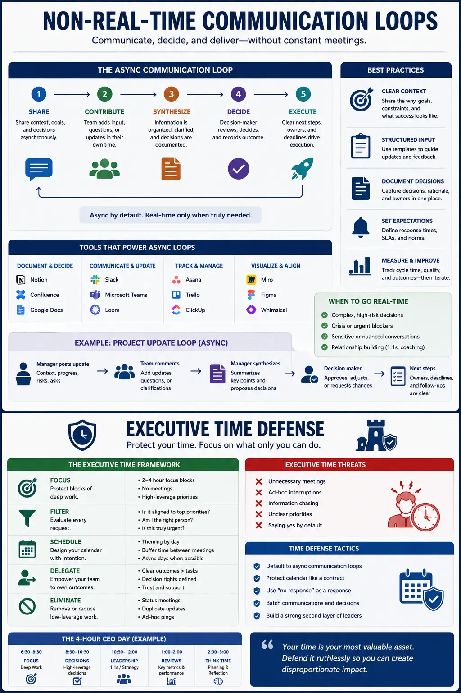
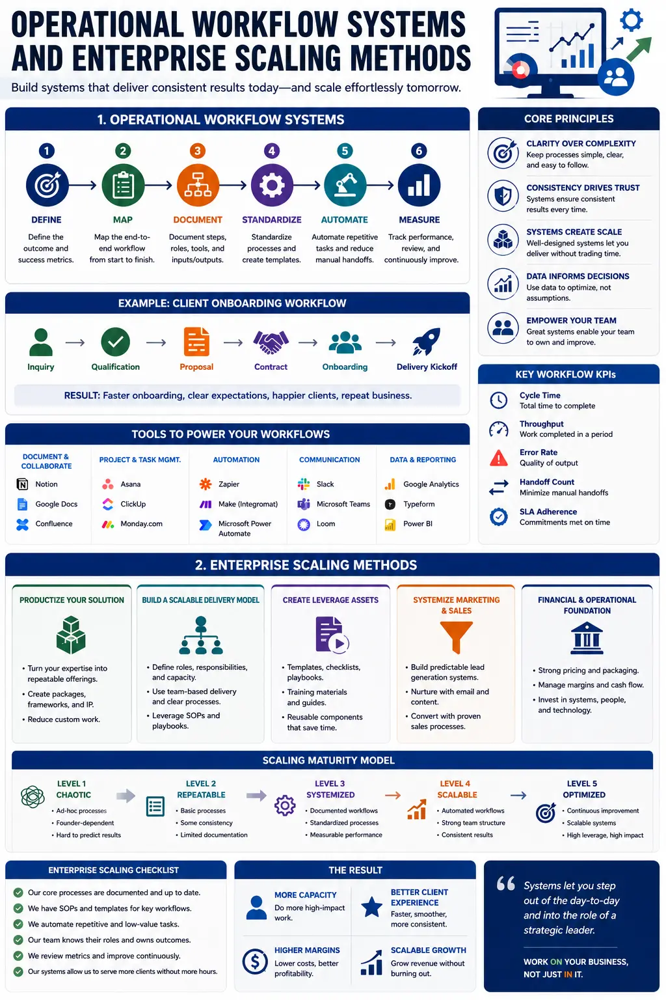

Designing Professional Development Goals That Eliminate Low-Leverage Video Calls
The Cognitive Drain of the Modern Calendar
The modern corporate workspace is plagued by a silent productivity killer: the low-leverage video call. As remote work and hybrid models have become standard, the default response to any project update, question, or decision has become "let's jump on a quick call." For business leaders, this has created a culture of back-to-back calendar events that fragment the day and leaves little room for deep work. Establishing structured Professional Development Goals is the absolute first step in reclaiming control over your schedule. When an executive commits to Personal development goals for work focus, they begin to view their calendar not as an open public resource, but as a critical operational asset. This shift in perspective requires mastering specialized self development skills for managers, which involve learning to establish boundaries, reject meeting invites without pre-set agendas, and push the organization toward asynchronous alternatives.
A meeting-heavy culture is often a symptom of underlying operational gaps. When employees and clients do not have access to clear information, they demand real-time conversations to get answers. By designing clear Professional Development Goals around calendar defense, leaders are forced to address these systemic issues. Developing self development skills for managers means recognizing that every low-leverage meeting is a failure of documentation or delegation. Through systematic small business operations planning and the implementation of structured corporate organization methods, a company can build systems that provide answers automatically, rendering daily status-check video calls completely obsolete. Over time, these practices build operational resilience, allowing the team to work autonomously and freeing the leadership team from the daily grind of meeting facilitation.
This structural change does not happen overnight. It requires a deliberate evaluation of how time is allocated across the leadership team. Executives must first audit their calendars, identifying every meeting that does not directly contribute to high-value strategic outcomes. This process is central to establishing Personal development goals for work focus. By defining what constitutes a high-leverage activity, managers can systematically decline invites that fall outside their scope of influence. This discipline is one of the most critical self development skills for managers, as it shifts the focus from performative activity to actual productivity. When leaders actively protect their time, they set a powerful example for the rest of the organization, paving the way for a more focused, efficient work environment.
The Anatomy of Low-Leverage Video Calls
To eliminate calendar bloat, we must first define what makes a video call low-leverage. High-leverage activities are those that yield disproportionate returns on time invested, such as strategic coaching, creative brainstorming, and high-value deal closing. In contrast, low-leverage video calls consist of status updates, walkthroughs of basic documents, and administrative syncs that could easily be handled through a Slack message or a shared dashboard. When a founder or manager spends their day in these low-value interactions, they are actively blocking their own growth. This is why setting clear Executive Time-Leverage Targets is crucial. By tracking the ratio of deep-work blocks to meeting hours, managers can make data-driven decisions about where to cut back.
The cost of these calls is not just measured in hours, but in cognitive load. Context-switching—the act of jumping from a meeting with one client to a call with another, and then trying to write a proposal—drains mental energy. This constant distraction prevents managers from entering the state of flow necessary for strategic thinking. To combat this, setting executive performance metrics that evaluate managers on their time leverage, rather than their sheer availability, is essential. When an organization starts setting executive performance metrics that penalize meeting bloat, managers are incentivized to protect their focus. This is where Personal development goals for work focus play a key role, guiding leaders to focus on high-impact objectives rather than performative busyness.
Furthermore, the reliance on real-time video calls creates a culture of dependency. Team members become hesitant to make decisions without a meeting, leading to project delays and operational bottlenecks. By setting firm Executive Time-Leverage Targets, leaders force their teams to take ownership of their projects. This delegation is a key milestone in scaling founder leadership paths. When a founder refuses to join every alignment call, team members are forced to develop their own problem-solving skills, leading to a more capable and autonomous workforce. This transition is essential for any business looking to grow past its initial stages, as it ensures that the business's capacity is not limited by the founder's personal availability.
Transitioning to Asynchronous Communication Frameworks
The most effective way to eliminate low-leverage video calls is to replace them with structured Asynchronous Communication Frameworks. These frameworks allow team members and clients to share information and provide feedback on their own schedules. Instead of scheduling a live call to present a monthly progress report, a team member can record a short video walkthrough and post it alongside a written summary in a shared workspace. The client can then review the report, share it with their internal team, and provide structured feedback when it fits their schedule. This eliminates the back-and-forth calendar coordination and gives the executive back hours of uninterrupted time.
Moving to asynchronous communication requires a shift in how we manage projects. It requires adopting modern corporate organization methods to ensure that all documentation is organized and accessible. When every project has a single source of truth—such as a centralized project board or wiki—team members and clients do not need to schedule a meeting to find out where things stand. They can simply check the board. Teaching teams to maintain these dashboards is an essential part of developing self development skills for managers, as it shifts the leader's role from a daily coordinator to a system administrator who ensures that the communication infrastructure is operating smoothly. This systematic clarity reduces stress and ensures that projects move forward even when the leader is offline.
Clients may initially resist the move away from live meetings, fearing a loss of touch or visibility. To address this, organizations must present Asynchronous Communication Frameworks as a premium feature that ensures faster project delivery and higher quality work. When clients realize that their feedback is processed more carefully and that they do not have to wait for a scheduled call to get an update, they quickly adapt. By combining these frameworks with robust small business operations planning, you build a client experience that feels highly responsive without requiring a single minute of live, synchronous conversation. This level of systemization not only improves client retention but also increases the agency's capacity to handle more business without hiring additional project managers.
Establishing Executive Time-Leverage Targets
Setting Executive Time-Leverage Targets provides the quantitative foundation for calendar defense. These targets should define the maximum percentage of time an executive is allowed to spend in meetings each week. For a typical manager or founder, a healthy target might be to limit meeting time to less than 20% of their total working hours, leaving the remaining 80% for deep focus, strategic planning, and creative work. Without these clear targets, calendar bloat will inevitably creep back in as new projects and clients are onboarded. By treating time as a finite resource, leaders can prioritize their activities and ensure they are focusing on what truly matters.
To ensure these targets are met, they must be integrated into the company's review process. By setting executive performance metrics that measure time leverage, the company signals that calendar defense is a core leadership capability. For instance, a director's performance review could include a metric for reducing their team's meeting hours by a specific percentage. This encourages managers to audit their meetings, cancel unnecessary syncs, and adopt asynchronous workflows. When time-leverage targets are tied to professional advancement, the entire corporate culture shifts toward efficiency. This alignment is what turns a meeting-heavy startup into a high-leverage enterprise.
Achieving these targets also requires a personal commitment to self-discipline. Leaders must learn to say no to invitations that lack a clear agenda or could be resolved via email. This is a core element of Personal development goals for work focus. By committing to these goals, leaders build the habit of protecting their schedule, ensuring they have the mental space required to build scalable systems. This discipline is what allows a founder to transition from a daily operator to a strategic leader, opening up new scaling founder leadership paths that lead to long-term business success. By defending their time, leaders can focus on the high-level strategies that drive actual growth, rather than getting caught in the day-to-day operations of the business.
Time-Leverage Maximization
Setting clear Executive Time-Leverage Targets protects your calendar and reserves blocks for high-value strategic growth.
Operational Autonomy
Through structured small business operations planning, your team runs client check-ins independently using standard operating procedures.
Reduced Meeting Overhead
Implementing Asynchronous Communication Frameworks reduces the number of live meetings by up to 50% without harming client satisfaction.
Accelerated Leadership Growth
Pursuing scaling founder leadership paths transitions you from a daily operator to a visionary systems architect.

The Role of Small Business Operations Planning
Many small businesses suffer from founder-dependency, where the owner is involved in every decision and must attend every client meeting. This is a primary bottleneck that prevents scaling. To break this dependency, comprehensive small business operations planning is required. This planning involves mapping out every operational process, documenting standard operating procedures (SOPs), and building systems that allow the team to deliver services independently. When processes are standardized, the team can manage client communication without the founder's intervention, eliminating the need for the founder to attend low-leverage status calls. This operational autonomy is the key to building a scalable, valuable business.
A critical component of small business operations planning is the creation of self-service client portals. When clients can log in to view project progress, upload assets, and review deliverables at any time, they no longer need to schedule check-in calls. This self-service approach provides the client with transparency while protecting the executive's calendar. Furthermore, implementing advanced corporate organization methods ensures that these portals are kept up-to-date automatically, reducing the administrative burden on the team and creating a seamless, low-touch client experience. By leveraging technology to provide transparency, businesses can deliver a superior client experience with significantly less manual effort.
By investing in operational systemization, small businesses can achieve enterprise-level efficiency. This systemization provides the team with clear guidelines on how to handle routine inquiries, reducing the need for internal alignment meetings. The result is a calm, focused environment where team members can execute their tasks without constant interruptions. For the owner, this operational independence is what makes scaling founder leadership paths possible, freeing up the time needed to focus on high-level growth initiatives, strategic relationships, and long-term planning. By building a business that runs itself, the founder can focus on building a business that changes the industry.
Scaling Founder Leadership Paths
Reclaiming hours from low-leverage meetings is not just about reducing stress; it is about enabling strategic expansion. When a founder is no longer bogged down by daily client calls and operational firefighting, they can step into their true role as a visionary leader. This is the essence of scaling founder leadership paths. With the calendar cleared, the founder can focus on high-level strategy, research new market opportunities, build strategic partnerships, and refine the company's long-term vision. This strategic focus is what drives sustainable business growth, allowing the company to capture new markets and outcompete rivals.
Navigating these growth paths requires a shift in leadership style. The founder must transition from a hands-on operator who manages tasks to a systems architect who designs and refines the organizational infrastructure. This transition requires setting clear Professional Development Goals focused on delegation, systems design, and strategic leadership. By committing to Personal development goals for work focus, the founder learns to trust their systems and empower their team, ensuring that the business can scale without their daily intervention. This shift is essential for personal growth, as it allows the founder to develop the skills needed to lead a larger, more complex organization.
Ultimately, scaling founder leadership paths is about building a business that is larger than any single individual. By creating a self-sustaining organization powered by asynchronous communication and clear operational systems, the founder builds a valuable asset that can operate independently. This level of scaling is only possible when the founder makes a deliberate decision to eliminate low-leverage video calls and invest their time in high-value strategic work. By aligning their personal development with the organization's operational goals, the founder creates a powerful engine for both personal and business growth, establishing a legacy that lasts far beyond their daily involvement.
Client Progress Dashboards
Utilize client portals that display project milestones, deliverables, and timelines. This eliminates status-check calls and keeps clients aligned asynchronously.
Asynchronous Video Updates
Replace live presentations with short video briefings. Clients review and compile feedback on their own schedules, eliminating back-and-forth calendar coordination.
Structured Project Boards
Organize workflows using Kanban systems. Team members update task cards, providing a clear paper trail and reducing the need for daily standup alignment meetings.

Setting Executive Performance Metrics & Corporate Organization Methods
To maintain an asynchronous, meeting-lite culture, the organization must establish clear systems of accountability. This begins with setting executive performance metrics that reward efficiency and calendar defense. Managers should be evaluated on their ability to lead their teams without relying on constant meetings. If a manager requires daily syncs to keep their team on track, it indicates a failure in systems design or documentation. By tracking meeting hours and setting clear limits, the company ensures that asynchronous habits are maintained across the organization. This accountability is crucial for preventing calendar creep, ensuring that the team remains focused on high-impact work.
This accountability must be supported by advanced corporate organization methods that make asynchronous work easy. This includes establishing a single source of truth for all project documentation, creating clear guidelines for communication channel usage (e.g., Slack for quick updates, email for formal requests, Loom for video walkthroughs), and providing templates for common client interactions. When everyone in the organization follows the same communication protocols, the risk of misunderstandings is minimized, and the need for clarifying meetings is eliminated. These standardized methods create a common language for the team, making collaboration smoother and more efficient.
Sustaining this culture also requires regular audits of the organization's communication systems. Leaders should periodically review project management boards, client feedback, and team meeting hours to identify bottlenecks and areas for improvement. This continuous refinement is a key part of small business operations planning and executive development. By keeping a sharp focus on Executive Time-Leverage Targets and maintaining calendar discipline, executives can ensure they have the time and energy needed to drive the business forward. Through regular evaluation, the business can adapt its communication strategies to meet new challenges, ensuring long-term efficiency and success.
The Path Forward: Designing Your Time-Defense Strategy
In conclusion, eliminating low-leverage video calls is a comprehensive operational and personal transformation. It requires setting clear Professional Development Goals, developing self development skills for managers, and implementing robust Asynchronous Communication Frameworks. It demands that you monitor your Executive Time-Leverage Targets and hold yourself and your team accountable through setting executive performance metrics. By committing to detailed small business operations planning and implementing modern corporate organization methods, you build the foundation for scaling founder leadership paths and achieving true operational freedom. Reclaim your focus, invest in your systems, and let your business thrive.
Key Topics
Ready to Build Asynchronous Frameworks and Eliminate Low-Leverage Calls?
At The PhD Ads in Madurai, we specialize in helping founders, executives, and operational managers design and achieve their Professional Development Goals. From establishing Asynchronous Communication Frameworks and setting Executive Time-Leverage Targets to structuring small business operations planning and implementing advanced corporate organization methods, we provide the strategic guidance, coaching, and execution support you need to scale your leadership. Let us help you eliminate pointless meetings, optimize your operations, and reclaim control of your calendar.
Email: team@e2o.in